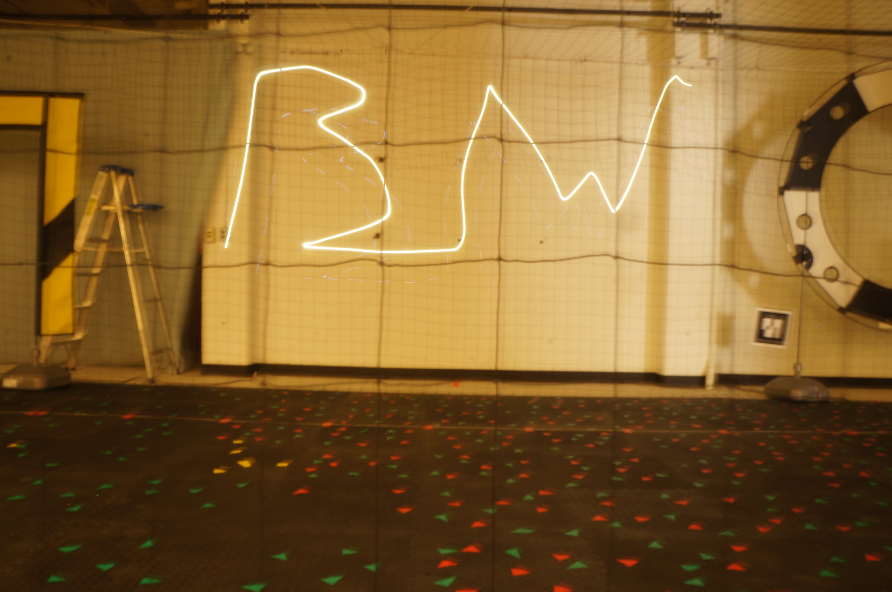
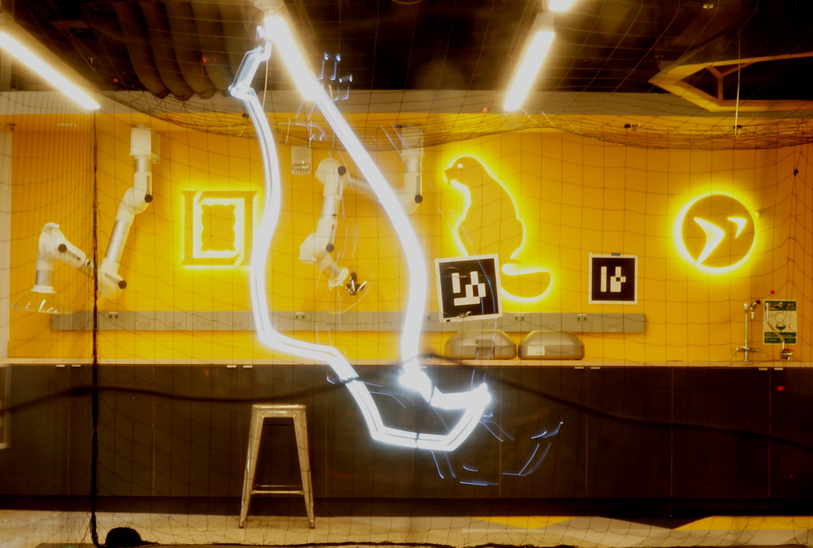

Module 3: Estimation & Control¶
Intro to Estimation, Control, & Planning
Unit 1: Kinematics & Dynamics¶
Goal: Students will understand the various reference frames involved with UAV navigation and how to perform transformation/rotations between frames. We will use this knowledge to practice our first autonomous flights through use of open-loop control. We will explore some of the physics behind quadrotor flight, i.e. the quadrotor’s state and equations of motion.
Lectures:
Practicals:
Advanced Topics:
Challenge 2: Aerial Choreography¶
Goal: Teams will compete to generate the best drone choreography; i.e. executing to most interesting and precise aerial maneuvers and trajectories using open loop control.
Basic Challenge: Square Trajectory¶
Can you program your drone to trace out a perfect square in the air? Building on the code from the open loop control practical, add functionality to trace a complete square. The instructors will judge the winning flight by taking a long-exposure photo and score how well the LEDs onboard trace a square
Advanced Challenge: Freeform Sky Writing¶


Now let’s get creative! Building on the basic challenge, can you make more elaborate aerial trajectories? Perhaps you could try to trace out “BW” in the sky for “Beaver Works”! It’s up to you to decide and encode the most creative path for your drone. Again a long-exposure photo of the flight will be used for scoring with the most interesting aerial trace winning. Note: any flight that collides with the safety netting is disqualified, so make sure you know what your drone is going to do before it does it!
Assignments:
Challenge Report
Unit 2: State Estimation¶
Goal: From this understanding of quadrotor dynamics, we will then gain an appreciation for the importance and challenge of estimating the state of the quadrotor system.
In previous units we implemented black box localization algorithms on our drone (i.e. optical flow, ARTag identfication) so the drone has some estimate of where it is in the world, i.e. position. What about the other state variables of velocity, orientation, and angular rates? How is information from different sensors fused in such a way to provide an internally consistent, reliable estimate of the complete state of the drone? This is the role of the state estimator. In this unit we will gain an understanding of the importance and challenges of estimating the state of a robot as well as the techniques for doing so.
Lectures:
Practicals:
Advanced Topics:
Unit 3: Feedback Control¶
Goal: In a general sense the goal of this module is to understand how and why the output of a system can be looped back to the input in of the system in order to track a desired reference. For our purposes, the system is the quadrotor, the output is most often the state (position, velocity, orientation) as estimated by the state estimator, and the reference is some target state the quadrotor is trying to achieve (as generated by the planner).
In a specific sense, we will see how the computer vision algorithms we have developed can be implemented on the quadrotor in order to achieve autonomous flight
Lectures:
PID Control (MATLAB Tech Talk Video)
Practicals:
Advanced Topics:
Unit 4: Motion Planning¶
Goal: Feedback control requires the input of a reference or target that the control loop is attempting to track, but how and where is this reference/target generated? This is the role of the planner. The goal of this unit is to understand the importance, challenges, and techniques for generating higher level plans for a robotic system
Lectures:
Practicals:
[Yaw Planning]
Advanced Topics:
[ ]: